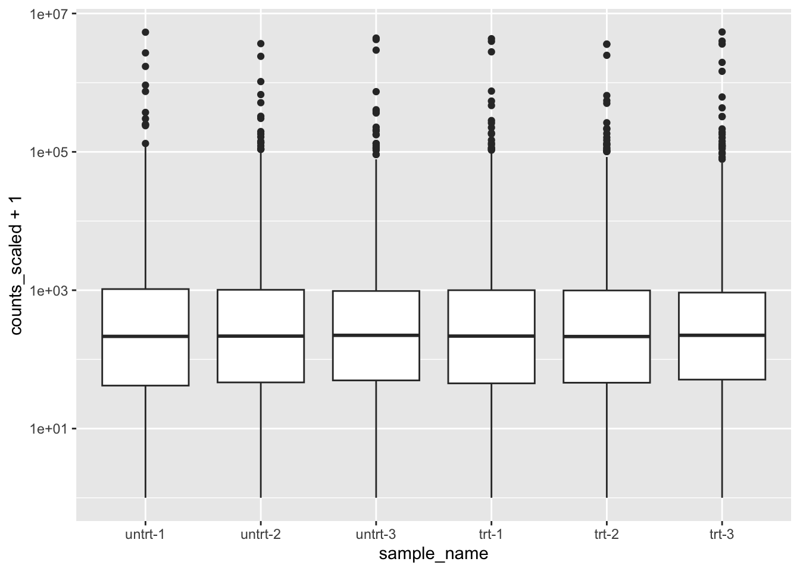
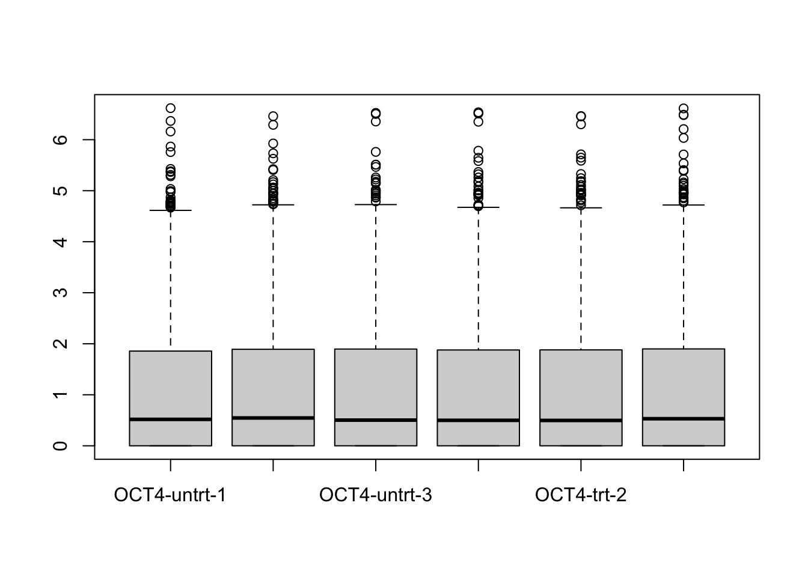
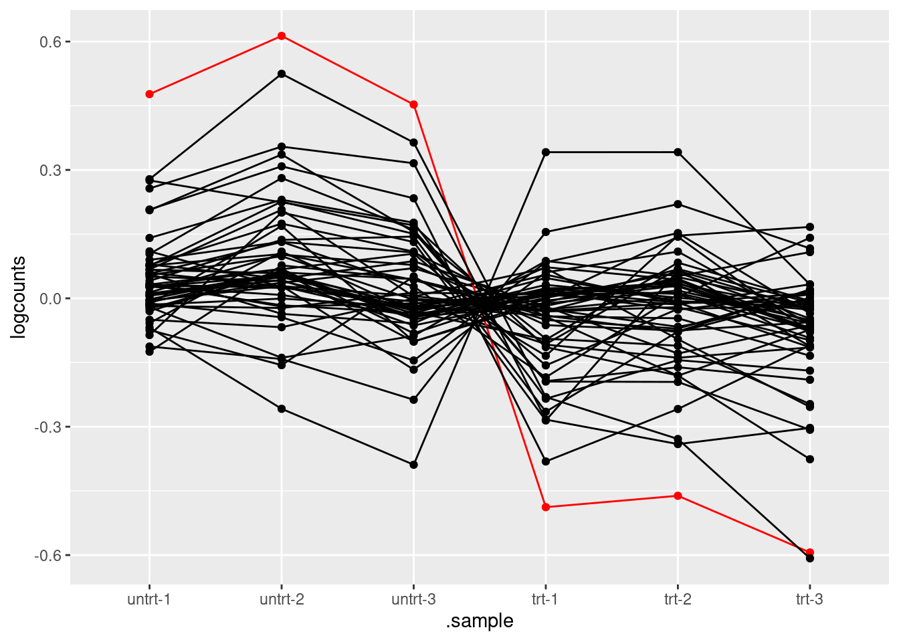
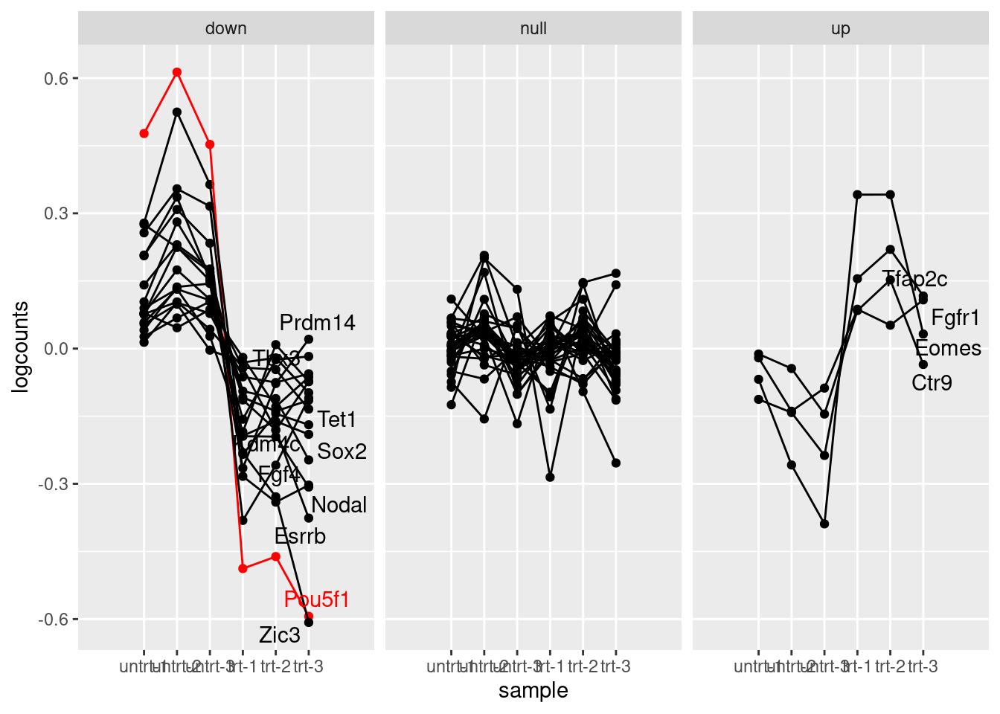

Chapter 7 Tidy RNA-seq EDA
Objective: learn how to perform EDA of RNA-seq data using tidybulk.
library(oct4)
dir <- system.file("extdata", package="oct4")
coldata <- read.csv(file.path(dir,"coldata.csv"))
coldata## names line condition
## 1 SRX2236945 OCT4 untrt
## 2 SRX2236946 OCT4 untrt
## 3 SRX2236947 OCT4 untrt
## 4 SRX2236948 OCT4 trt
## 5 SRX2236949 OCT4 trt
## 6 SRX2236950 OCT4 trt
## 7 SRX2236951 BRG1 untrt
## 8 SRX2236952 BRG1 untrt
## 9 SRX2236953 BRG1 untrt
## 10 SRX2236954 BRG1 trt
## 11 SRX2236955 BRG1 trt
## 12 SRX2236956 BRG1 trtcoldata$files <- file.path(dir, "quants", coldata$names, "quant.sf.gz")library(tximeta)
se <- tximeta(coldata)
gse <- summarizeToGene(se)
library(org.Mm.eg.db)
gse <- addIds(gse, "SYMBOL")library(SummarizedExperiment)
assayNames(gse)
assays(gse) <- assays(gse)[1:3]
save(gse, file="data/oct4_obj.rda")library(SummarizedExperiment)## Loading required package: MatrixGenerics## Loading required package: matrixStats##
## Attaching package: 'MatrixGenerics'## The following objects are masked from 'package:matrixStats':
##
## colAlls, colAnyNAs, colAnys, colAvgsPerRowSet, colCollapse,
## colCounts, colCummaxs, colCummins, colCumprods, colCumsums,
## colDiffs, colIQRDiffs, colIQRs, colLogSumExps, colMadDiffs,
## colMads, colMaxs, colMeans2, colMedians, colMins, colOrderStats,
## colProds, colQuantiles, colRanges, colRanks, colSdDiffs, colSds,
## colSums2, colTabulates, colVarDiffs, colVars, colWeightedMads,
## colWeightedMeans, colWeightedMedians, colWeightedSds,
## colWeightedVars, rowAlls, rowAnyNAs, rowAnys, rowAvgsPerColSet,
## rowCollapse, rowCounts, rowCummaxs, rowCummins, rowCumprods,
## rowCumsums, rowDiffs, rowIQRDiffs, rowIQRs, rowLogSumExps,
## rowMadDiffs, rowMads, rowMaxs, rowMeans2, rowMedians, rowMins,
## rowOrderStats, rowProds, rowQuantiles, rowRanges, rowRanks,
## rowSdDiffs, rowSds, rowSums2, rowTabulates, rowVarDiffs, rowVars,
## rowWeightedMads, rowWeightedMeans, rowWeightedMedians,
## rowWeightedSds, rowWeightedVars## Loading required package: GenomicRanges## Loading required package: stats4## Loading required package: BiocGenerics##
## Attaching package: 'BiocGenerics'## The following objects are masked from 'package:stats':
##
## IQR, mad, sd, var, xtabs## The following objects are masked from 'package:base':
##
## anyDuplicated, aperm, append, as.data.frame, basename, cbind,
## colnames, dirname, do.call, duplicated, eval, evalq, Filter, Find,
## get, grep, grepl, intersect, is.unsorted, lapply, Map, mapply,
## match, mget, order, paste, pmax, pmax.int, pmin, pmin.int,
## Position, rank, rbind, Reduce, rownames, sapply, setdiff, sort,
## table, tapply, union, unique, unsplit, which.max, which.min## Loading required package: S4Vectors##
## Attaching package: 'S4Vectors'## The following objects are masked from 'package:base':
##
## expand.grid, I, unname## Loading required package: IRanges## Loading required package: GenomeInfoDb## Loading required package: Biobase## Welcome to Bioconductor
##
## Vignettes contain introductory material; view with
## 'browseVignettes()'. To cite Bioconductor, see
## 'citation("Biobase")', and for packages 'citation("pkgname")'.##
## Attaching package: 'Biobase'## The following object is masked from 'package:MatrixGenerics':
##
## rowMedians## The following objects are masked from 'package:matrixStats':
##
## anyMissing, rowMediansload("data/oct4_obj.rda")gse$rep <- rep(1:3, 4)
colnames(gse) <- paste(gse$line,gse$condition,gse$rep,sep="-")
assay(gse, "counts") <- round(assay(gse, "counts")) # for consistencylibrary(org.Mm.eg.db)## Loading required package: AnnotationDbi## # pluripotency
tab <- select(org.Mm.eg.db, "GO:0019827", "SYMBOL", "GO")## 'select()' returned 1:many mapping between keys and columnstab <- tab[!duplicated(tab$SYMBOL),]
pluri <- tab$SYMBOLlibrary(tidybulk)## ========================================
## tidybulk version 1.11.2
## If you use TIDYBULK in published research, please cite:
##
## Mangiola et al. tidybulk: an R tidy framework for modular
## transcriptomic data analysis. Genome Biology 2021.
##
## This message can be suppressed by:
## suppressPackageStartupMessages(library(tidybulk))
## ========================================##
## Attaching package: 'tidybulk'## The following object is masked from 'package:S4Vectors':
##
## rename## The following object is masked from 'package:stats':
##
## filterlibrary(dplyr)##
## Attaching package: 'dplyr'## The following objects are masked from 'package:tidybulk':
##
## bind_cols, bind_rows## The following object is masked from 'package:AnnotationDbi':
##
## select## The following object is masked from 'package:Biobase':
##
## combine## The following objects are masked from 'package:GenomicRanges':
##
## intersect, setdiff, union## The following object is masked from 'package:GenomeInfoDb':
##
## intersect## The following objects are masked from 'package:IRanges':
##
## collapse, desc, intersect, setdiff, slice, union## The following objects are masked from 'package:S4Vectors':
##
## first, intersect, rename, setdiff, setequal, union## The following objects are masked from 'package:BiocGenerics':
##
## combine, intersect, setdiff, union## The following object is masked from 'package:matrixStats':
##
## count## The following object is masked from 'package:testthat':
##
## matches## The following objects are masked from 'package:stats':
##
## filter, lag## The following objects are masked from 'package:base':
##
## intersect, setdiff, setequal, unionlibrary(stringr)
oct4 <- gse %>%
tidybulk() %>%
filter(line == "OCT4") %>%
mutate(.sample = str_remove(.sample, "OCT4-")) %>%
mutate(.sample = factor(.sample, levels=unique(.sample)),
condition = factor(condition, c("untrt","trt")))oct4 <- oct4 %>%
keep_abundant(factor_of_interest = condition) %>%
scale_abundance(method="RLE") # DESeq2 scaling## tidybulk says: the sample with largest library size untrt-1 was chosen as reference for scalinglibrary(ggplot2)
oct4 %>%
ggplot(aes(.sample, log10(counts_scaled + 1))) +
geom_boxplot()
library(DESeq2)
gse_sub <- gse[ , gse$line == "OCT4" ]
gse_sub$condition <- factor(gse_sub$condition)
dds <- gse_sub %>%
DESeqDataSet(~condition) %>%
estimateSizeFactors()## using counts and average transcript lengths from tximeta## using 'avgTxLength' from assays(dds), correcting for library sizeboxplot(log10(counts(dds, normalized=TRUE) + 1))
oct4 %>%
filter(SYMBOL %in% pluri) %>%
mutate(logcounts = log10(counts_scaled + 1)) %>%
mutate(Oct4 = ifelse(SYMBOL == "Pou5f1", "red", "black")) %>%
group_by(.feature) %>%
mutate(logcounts = logcounts - mean(logcounts)) %>%
ungroup() %>%
ggplot(aes(.sample, logcounts, group=.feature, color=Oct4)) +
geom_point() +
geom_line() +
scale_color_identity()
gene_idx <- mcols(dds)$SYMBOL %in% pluri
mat <- log10(counts(dds, normalized=TRUE)[gene_idx,] + 1)
mat <- mat - rowMeans(mat)
hilite <- rownames(dds)[which(mcols(dds)$SYMBOL == "Pou5f1")]
plot(mat[1,], type="n", ylim=c(-1,1), xlab="samples", ylab="logcounts")
for (i in 1:nrow(mat)) {
col <- ifelse(rownames(mat)[i] == hilite, "red", "black")
points(mat[i,], type="b", col=col)
}
gene_idx <- oct4 %>% pivot_transcript() %>% pull(.feature)
assays(dds) <- assays(dds)[1:2] # compatiblity with tidybulk
res <- dds[gene_idx,] %>%
DESeq() %>%
results()## estimating size factors## estimating dispersions## gene-wise dispersion estimates## mean-dispersion relationship## final dispersion estimates## fitting model and testingoct4 <- oct4 %>%
test_differential_abundance(~condition, method="deseq2")## =====================================
## tidybulk says: All testing methods use raw counts, irrespective of if scale_abundance
## or adjust_abundance have been calculated. Therefore, it is essential to add covariates
## such as batch effects (if applicable) in the formula.
## =====================================
## estimating size factors
##
## estimating dispersions
##
## gene-wise dispersion estimates
##
## mean-dispersion relationship
##
## final dispersion estimates
##
## fitting model and testing
##
## tidybulk says: to access the raw results (fitted GLM) do `attr(..., "internals")$DESeq2`
## This message is displayed once per session.tidy_res <- oct4 %>%
pivot_transcript()all.equal(rownames(res), tidy_res$.feature)## [1] TRUEtable(base_sig = res$padj < .1, tidy_sig = tidy_res$padj < .1)## tidy_sig
## base_sig FALSE TRUE
## FALSE 17743 0
## TRUE 0 3734plot_data <- oct4 %>%
filter(SYMBOL %in% pluri) %>%
mutate(logcounts = log10(counts_scaled + 1)) %>%
mutate(Oct4 = ifelse(SYMBOL == "Pou5f1", "red", "black")) %>%
group_by(.feature) %>%
mutate(logcounts = logcounts - mean(logcounts)) %>%
ungroup() %>%
mutate(gene_type = case_when(
padj < .1 & log2FoldChange > 0 ~ "up",
padj < .1 & log2FoldChange < 0 ~ "down",
TRUE ~ "null"))library(ggrepel)
plot_data %>%
ggplot(aes(.sample, logcounts, group=.feature, color=Oct4)) +
geom_point() +
geom_line() +
geom_text_repel(data=plot_data %>%
filter(.sample == "trt-3", gene_type != "null"),
aes(.sample, logcounts, label=SYMBOL)) +
scale_color_identity() +
facet_wrap(~gene_type) +
scale_x_discrete(expand = expansion(add = 2)) +
xlab("sample")## Warning: ggrepel: 8 unlabeled data points (too many overlaps). Consider
## increasing max.overlaps